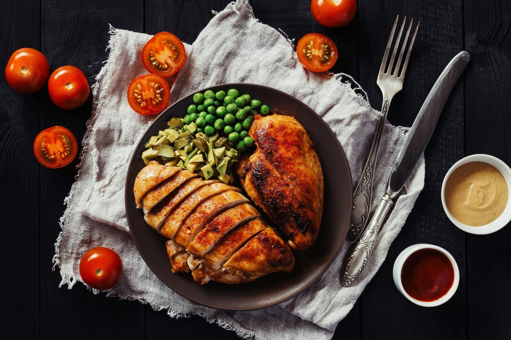

Getting enough protein is essential whether your goal is losing fat, building muscle, or simply maintaining good health. But knowing which foods give you the most protein per calorie — and per gram — makes hitting your daily target much easier. Here is a complete ranked list of the best high-protein foods.
Animal protein sources
| Food | Protein (per 100g) | Calories (per 100g) |
|---|---|---|
| Chicken breast (cooked) | 31g | 165 kcal |
| Turkey breast (cooked) | 30g | 157 kcal |
| Tuna (canned in water) | 29g | 116 kcal |
| Shrimp (cooked) | 24g | 99 kcal |
| Salmon (cooked) | 25g | 208 kcal |
| Cod (cooked) | 23g | 105 kcal |
| Beef (lean, cooked) | 26g | 215 kcal |
| Pork loin (cooked) | 27g | 189 kcal |
| Eggs (whole) | 13g | 155 kcal |
| Egg whites | 11g | 52 kcal |
| Greek yoghurt (0% fat) | 10g | 59 kcal |
| Cottage cheese (low fat) | 11g | 72 kcal |
| Skyr (Icelandic yoghurt) | 11g | 63 kcal |
| Whey protein powder | 80g | 400 kcal |
| Casein protein powder | 77g | 370 kcal |
Dairy protein sources
| Food | Protein (per 100g) | Calories (per 100g) |
|---|---|---|
| Parmesan cheese | 36g | 431 kcal |
| Gruyère cheese | 29g | 413 kcal |
| Cheddar cheese | 25g | 403 kcal |
| Mozzarella (low moisture) | 28g | 318 kcal |
| Ricotta cheese | 11g | 174 kcal |
| Milk (whole) | 3.4g | 61 kcal |
| Milk (skimmed) | 3.4g | 35 kcal |
Plant-based protein sources
| Food | Protein (per 100g) | Calories (per 100g) |
|---|---|---|
| Seitan (wheat gluten) | 25g | 370 kcal |
| Tempeh | 19g | 193 kcal |
| Edamame (cooked) | 11g | 121 kcal |
| Tofu (firm) | 8g | 76 kcal |
| Lentils (cooked) | 9g | 116 kcal |
| Black beans (cooked) | 9g | 132 kcal |
| Chickpeas (cooked) | 9g | 164 kcal |
| Kidney beans (cooked) | 8g | 127 kcal |
| Green peas (cooked) | 5g | 84 kcal |
| Quinoa (cooked) | 4g | 120 kcal |
| Hemp seeds | 32g | 553 kcal |
| Pumpkin seeds | 30g | 559 kcal |
| Peanut butter | 25g | 588 kcal |
| Almonds | 21g | 579 kcal |
| Oats (dry) | 17g | 389 kcal |
Best protein sources by goal
Best for fat loss (high protein, low calories)
When eating in a calorie deficit, you want maximum protein per calorie. The best options are: egg whites, tuna in water, shrimp, chicken breast, Greek yoghurt (0%), cottage cheese, and cod. These give 10–29g of protein per 100g with minimal fat and carbohydrates.
Best for muscle building (high protein + calories)
During a calorie surplus, total protein intake matters most. Salmon, beef, whole eggs, Greek yoghurt, and cottage cheese provide protein alongside healthy fats and calories that support muscle growth and recovery.
Best plant-based sources
For plant-based eaters, combining sources throughout the day covers all essential amino acids. Best options: tempeh, edamame, lentils, black beans, tofu, and hemp seeds. Pea or soy protein powder can help fill gaps.
Tips for hitting your protein target
- Build meals around protein first — choose your protein source, then add carbs and fats around it
- Spread intake across meals — 3–5 protein-containing meals per day is more effective than one large serving
- Keep high-protein snacks available — Greek yoghurt, cottage cheese, hard-boiled eggs, and tuna are convenient options
- Use protein powder strategically — it is a convenient tool, not a necessity. Food-first is always better